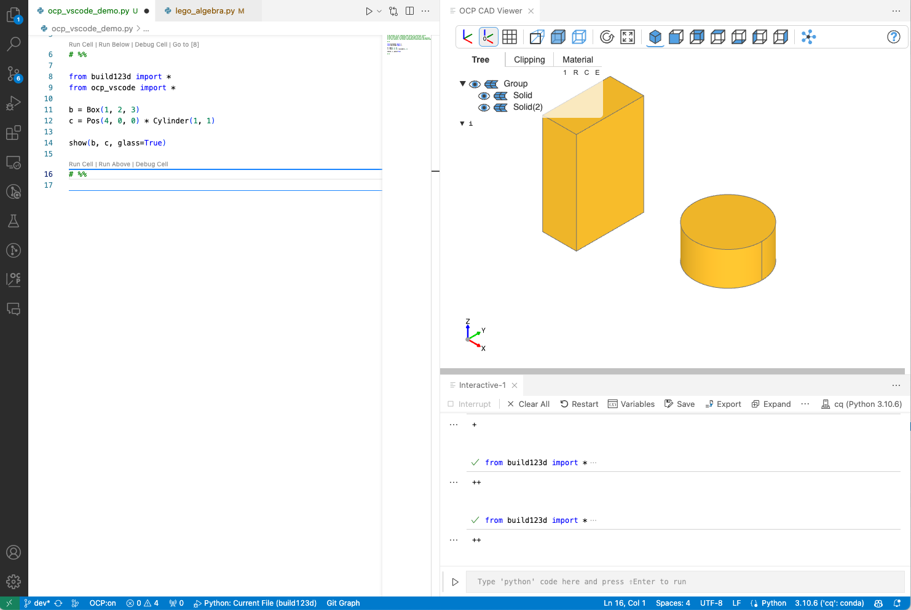
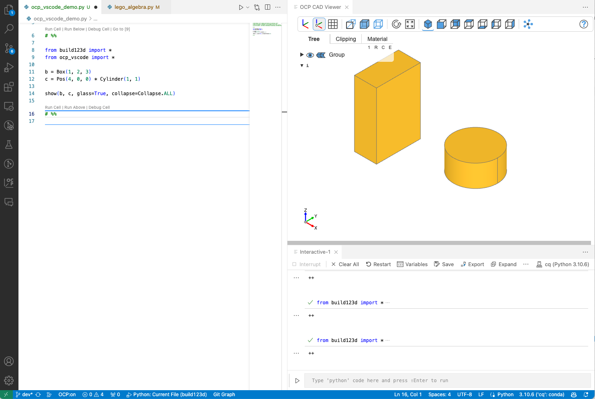
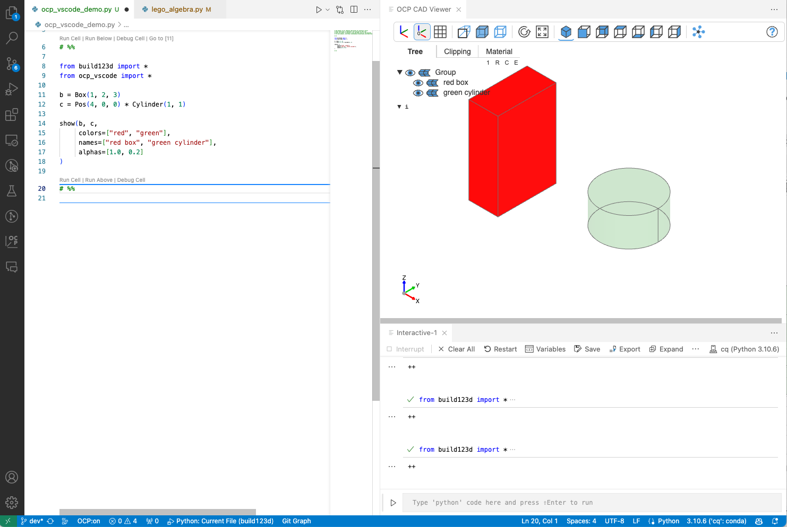
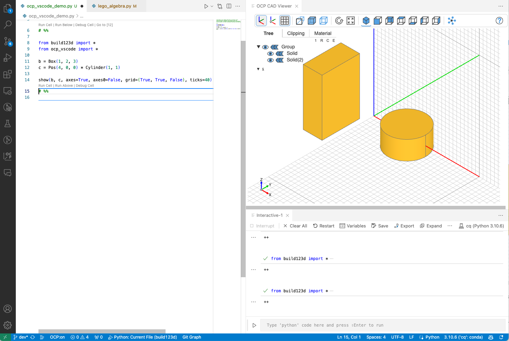
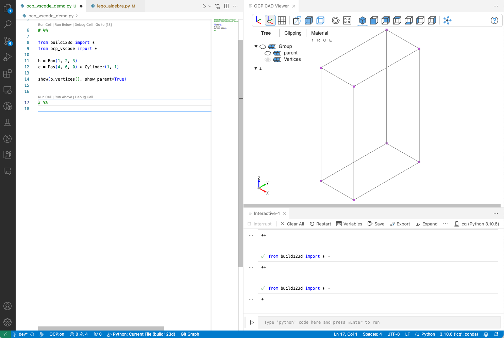
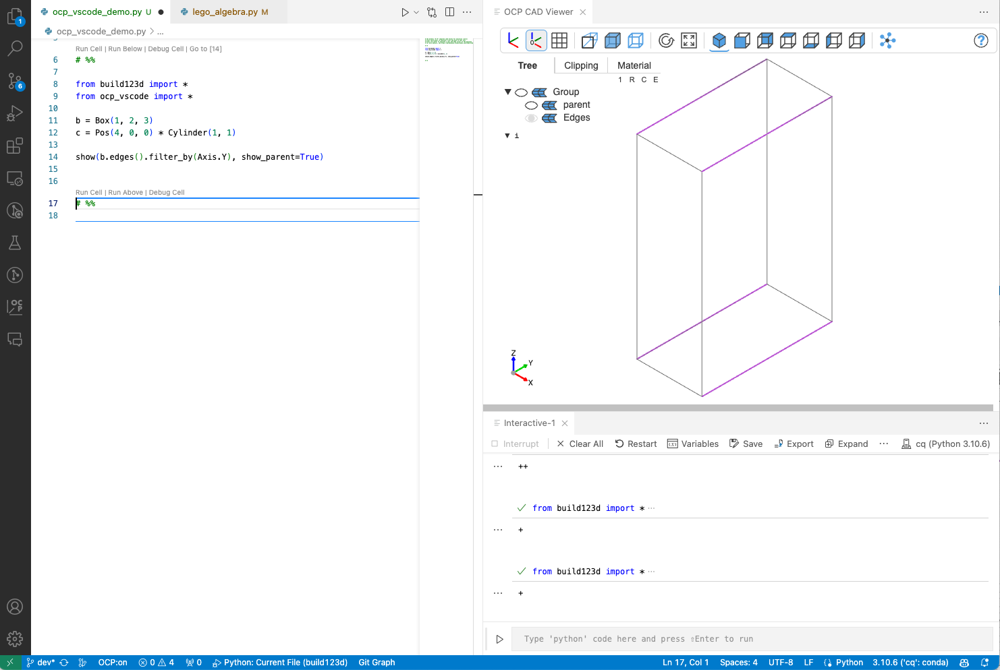
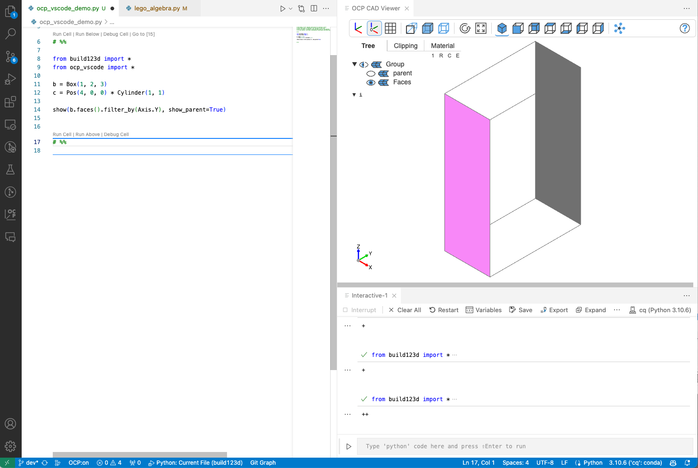

show
show¶
Command¶
The show command is used to show one or multiple CAD objects and comes with the following parameters:
show(*cad_objs, <keyword arguments>)
Arguments¶
Parameters
cad_objs: All cad objects that should be shown as positional parameters
Keywords for show:
names: List of names for the cad_objs. Needs to have the same length as cad_objs
colors: List of colors for the cad_objs. Needs to have the same length as cad_objs
alphas: List of alpha values for the cad_objs. Needs to have the same length as cad_objs
modes: A Render value or list of Render values for the cad_objs (default=None, i.e. Render.ALL).
Render.ALL: show faces and edges
Render.EDGES: show edges only
Render.FACES: show faces only
Render.NONE: hide object
materials: List of Material objects or material name strings for the cad_objs. Needs to have the same length as cad_objs (default=None)
progress: Show progress of tessellation with None is no progress indicator. (default="-+*c")
for object: "-": is reference,
"+": gets tessellated with Python code,
"*": gets tessellated with native code,
"c": from cache
Host keywords (each viewer accepts some of these and refuses the rest — see "Host keywords" below):
port: The viewer to address when several are open (ocp_vscode, ocp_viewer)
viewer: The sidecar to draw into, by title (jupyter_cadquery)
anchor: Where to open that sidecar: "right", "split-right", "split-left",
"split-top", "split-bottom" (jupyter_cadquery, default="right")
cad_width: Width of the viewer, where the caller decides it (jupyter_cadquery)
height: Height of the viewer, where the caller decides it (jupyter_cadquery)
pinning: Whether the view can be pinned as a PNG (jupyter_cadquery)
Valid keywords to configure the viewer (**kwargs):
- UI
glass: Use glass mode where tree is an overlay over the cad object (default=False)
theme: Theme of the viewer: "light", "dark", or "browser" to follow the surface (default="browser")
tools: Show tools (default=True)
tree_width: Width of the object tree (default=240)
- Viewer
axes: Show axes (default=False)
axes0: Show axes at (0,0,0) (default=False)
grid: Show grid (default=False)
ortho: Use orthographic projections (default=True)
transparent: Show objects transparent (default=False)
default_opacity: Opacity value for transparent objects (default=0.5)
black_edges: Show edges in black color (default=False)
orbit_control: Mouse control use "orbit" control instead of "trackball" control (default=False)
collapse: Collapse.LEAVES: collapse all single leaf nodes,
Collapse.ROOT: expand root only,
Collapse.ALL: collapse all nodes,
Collapse.NONE: expand all nodes
(default=Collapse.ROOT)
ticks: Hint for the number of ticks in both directions (default=5)
center_grid: Center the grid at the origin or center of mass (default=False)
grid_font_size: Size for the font used for grid axis labels (default=12)
up: Use z-axis ('Z') or y-axis ('Y') as up direction for the camera (default="Z")
explode: Turn on explode mode (default=False)
zoom: Zoom factor of view (default=1.0)
position: Camera position
quaternion: Camera orientation as quaternion
target: Camera look at target
reset_camera: Camera.RESET: Reset camera position, rotation, zoom and target
Camera.CENTER: Keep camera position, rotation, zoom, but look at center
Camera.KEEP: Keep camera position, rotation, zoom, and target
Or, choose one of the presets Camera.ISO, Camera.LEFT, Camera.RIGHT,
Camera.TOP, Camera.BOTTOM, Camera.FRONT, Camera.BACK
(default=Camera.RESET)
clip_slider_0: Setting of clipping slider 0 (default=None)
clip_slider_1: Setting of clipping slider 1 (default=None)
clip_slider_2: Setting of clipping slider 2 (default=None)
clip_normal_0: Setting of clipping normal 0 (default=None)
clip_normal_1: Setting of clipping normal 1 (default=None)
clip_normal_2: Setting of clipping normal 2 (default=None)
clip_intersection: Use clipping intersection mode (default=False)
clip_planes: Show clipping plane helpers (default=False)
clip_object_colors: Use object color for clipping caps (default=False)
zebra_count: Setting of zebra stripe count (default=9, range: 2-50)
zebra_opacity: Setting of zebra opacity (default=1, range: 0-1)
zebra_direction: Setting of zebra direction angle (default=0, range: 0-90)
zebra_color_scheme: Zebra color scheme: "blackwhite", "grayscale", or "colorful" (default="blackwhite")
zebra_mapping_mode: Zebra mapping mode: "reflection" or "normal" (default="reflection")
studio_environment: Environment HDR map, use StudioEnvironment enum or a custom HDR URL
(default=StudioEnvironment.PROCEDURAL_STUDIO)
studio_env_intensity: Intensity of environment lighting, 0-3.0 (default=1.0)
studio_env_rotation: Rotation of environment map in degrees, 0-360 (default=0)
studio_background: StudioBackground.ENVIRONMENT, .TRANSPARENT, .GRADIENT, .GRADIENT_DARK,
.WHITE, .GREY, .DARKGREY (default=StudioBackground.ENVIRONMENT)
studio_tone_mapping: StudioToneMapping.NEUTRAL, .ACES, .NONE (default=StudioToneMapping.NEUTRAL)
studio_exposure: Tone mapping exposure, 0-3.0 (default=1.0)
studio_shadow_intensity: Shadow intensity, 0-1.0 (default=0.5)
studio_shadow_softness: Shadow softness, 0-1.0 (default=0.2)
studio_ao_intensity: Ambient occlusion intensity, 0-3.0 (default=0.5)
studio_texture_mapping: StudioTextureMapping.TRIPLANAR or .PARAMETRIC
(default=StudioTextureMapping.TRIPLANAR)
studio_4k_env_maps: Use 4K resolution environment maps (default=False)
pan_speed: Speed of mouse panning (default=1)
rotate_speed: Speed of mouse rotate (default=1)
zoom_speed: Speed of mouse zoom (default=1)
- Renderer
deviation: Shapes: Deviation from linear deflection value (default=0.1)
angular_tolerance: Shapes: Angular deflection in radians for tessellation (default=0.2)
edge_accuracy: Edges: Precision of edge discretization (default: mesh quality / 100)
default_color: Default mesh color (default=(232, 176, 36))
default_edgecolor: Default color of the edges of a mesh (default=#707070)
default_facecolor: Default color of faces (default=#ee82ee)
default_thickedgecolor: Default color of thick edges (default=#ba55d3)
default_vertexcolor: Default color of vertices (default=#ba55d3)
ambient_intensity: Intensity of ambient light (default=1.00)
direct_intensity: Intensity of direct light (default=1.10)
metalness: Metalness property of the default material (default=0.30)
roughness: Roughness property of the default material (default=0.65)
render_edges: Deprecated, use modes=Render.FACES or Render.ALL instead
render_normals: Render normals (default=False)
render_mates: Render mates for MAssemblies (default=False)
render_joints: Render build123d joints (default=False)
show_parent: Render parent of faces, edges or vertices as wireframe (default=False)
show_locals: In build123d show local part/sketch/line in addition to the relocated
object (default=True)
helper_scale: Scale of rendered helpers (locations, axis, mates for MAssemblies) (default=1)
If it is a float < 1, used the max distance to nested bounding box times
helper_scale to determine the absolut value of it
- Debug
debug: Show debug statements in the viewer's browser console (default=False)
timeit: Show timing information from level 0-3 (default=False)
Host keywords¶
show and friends (show_object, show_objects, show_all) all accept these keywords — only push_object takes none, since it just collects into the local registry and nothing reaches the viewer. They address the viewer's surface rather than its content, and a surface that decides such a thing itself refuses the keyword instead of ignoring it. Passing a refused keyword produces a warning naming it ('<key>' is not something this viewer can be told) and the keyword is not applied.
| Keyword | ocp_vscode | ocp_viewer | jupyter_cadquery | build123d_studio |
|---|---|---|---|---|
port |
✓ | ✓ | — | — |
viewer |
— | — | ✓ | — |
anchor |
— | — | ✓ | — |
cad_width, height |
— | — | ✓ | — |
pinning |
— | — | ✓ | — |
port=selects which viewer to address when several are open. Typically set once withset_port(port)instead of per call.viewer=names the sidecar to draw into, by the title it was opened with (open_viewer(title="Left")); showing into a title that does not exist yet opens that sidecar. Withoutviewer=, the default sidecar is used. The same addressing keyword appears on the state and defaults functions (see api.md).anchor=says where a newly opened sidecar goes; it cannot be changed once the sidecar exists.cad_width=/height=size the viewer where the caller decides its size — in a notebook cell. A VS Code panel, a browser window and the Studio app size themselves, so those viewers refuse both.pinning=controls whether the view offers the "pin as PNG" button.
Typically useful parameters¶
- Provide maximum space for the CAD object with glass mode
show(b, c, glass=True)

- Hide the tree in glass mode by collapsing the it
show(b, glass=True, collapse=Collapse.ALL)

Other valid parameters are "1" (collapse leafs) and "E" (explode tree)
- Names, colors and alpha values
show(b, c, colors=["red", "green"], names=["red box", "green cylinder"], alphas=[1.0, 0.2])

- Axes and grids
show(b, c, axes=True, axes0=False, grid=(True, True, False), ticks=40)

- Keeping the camera position between
showcommands
show(b, c, reset_camera=False)
- Show parent object for edges, faces and vertices (build123d syntax)
show(b.vertices(), show_parent=True)

show(b.edges().filter_by(Axis.Y), show_parent=True)

show(b.faces().filter_by(Axis.Y), show_parent=True)
